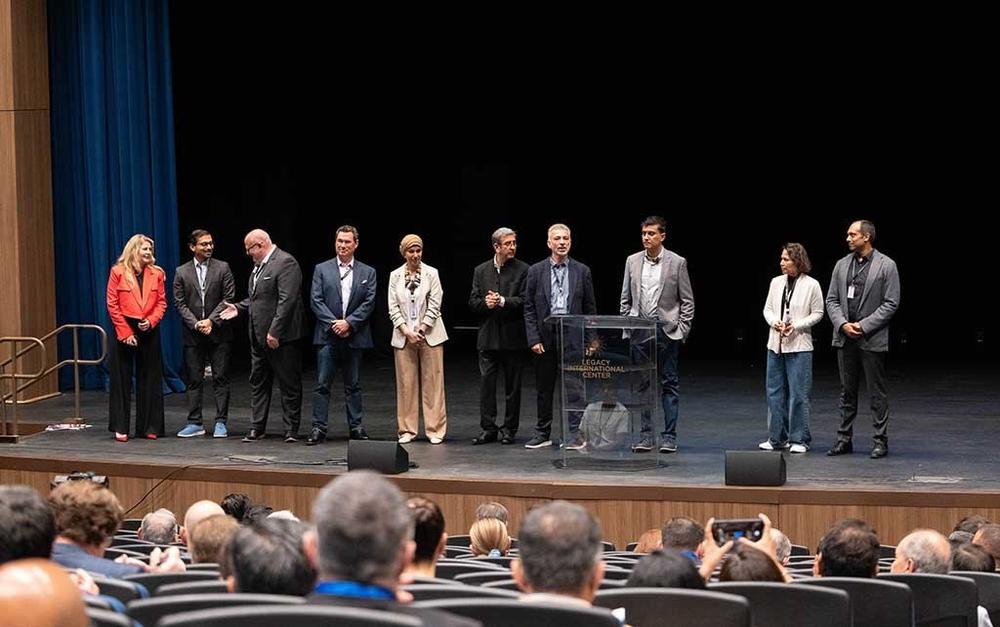
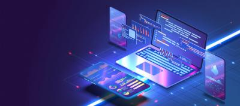
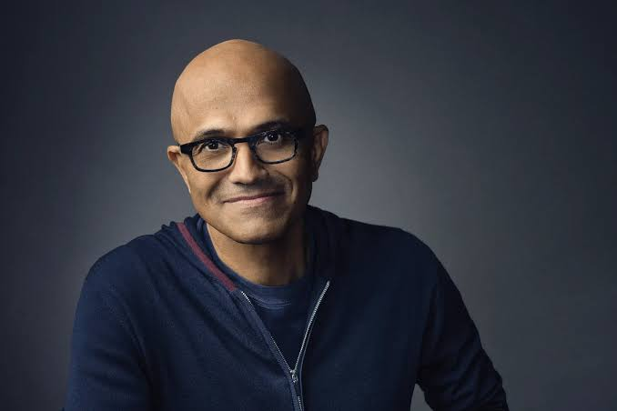
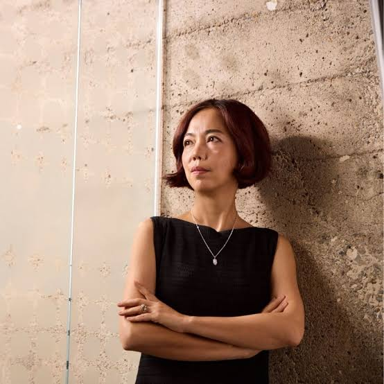

History of TechCon
TechCon was founded in 2005 with the goal of bringing together the brightest minds in technology to explore innovations, share knowledge, and shape the future of the tech industry. Since then, the conference has grown from a small regional event to an internationally recognized gathering.

Over the years, TechCon has hosted thousands of attendees from across the globe, featuring over 200 industry leaders and innovators. Our event’s success has been built on a strong foundation of collaboration, education, and vision.
Our Mission
TechCon 2024 continues the mission to foster innovation, collaboration, and excellence in the technology sector. We aim to create a platform where tech professionals, entrepreneurs, and thought leaders can exchange ideas and shape the future of technology.
Our core principles include:
- Promoting cutting-edge research and technology.
- Supporting diversity and inclusion in the tech community.
- Encouraging sustainable and ethical technology development.

Notable Past Speakers
Throughout its history, TechCon has hosted some of the most influential figures in the tech world. Here are a few of our past speakers:
Elon Musk

Elon Musk, CEO of Tesla and SpaceX, shared insights on the future of electric vehicles and space exploration during TechCon 2019.
Satya Nadella

Satya Nadella, CEO of Microsoft, discussed the role of cloud computing and AI in transforming industries at TechCon 2018.
Dr. Fei-Fei Li

Dr. Fei-Fei Li, a leading AI researcher, spoke about the importance of human-centered AI and its potential to solve global challenges at TechCon 2020.